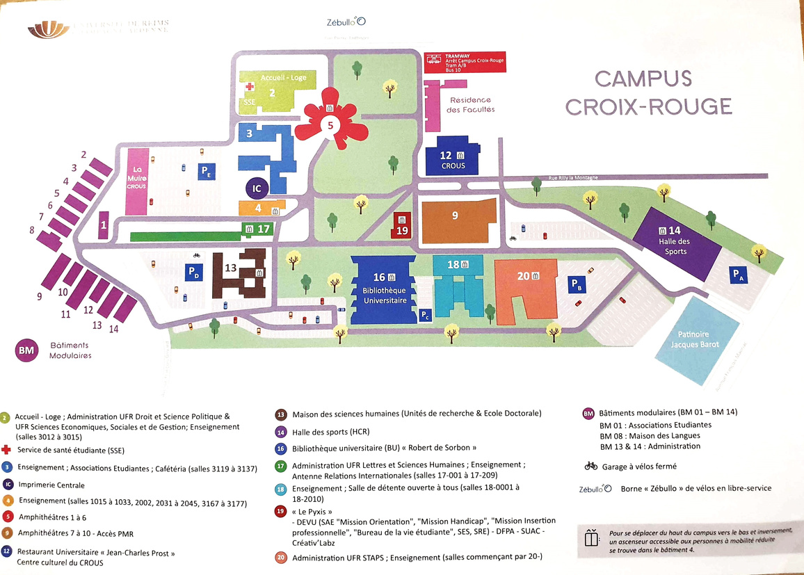
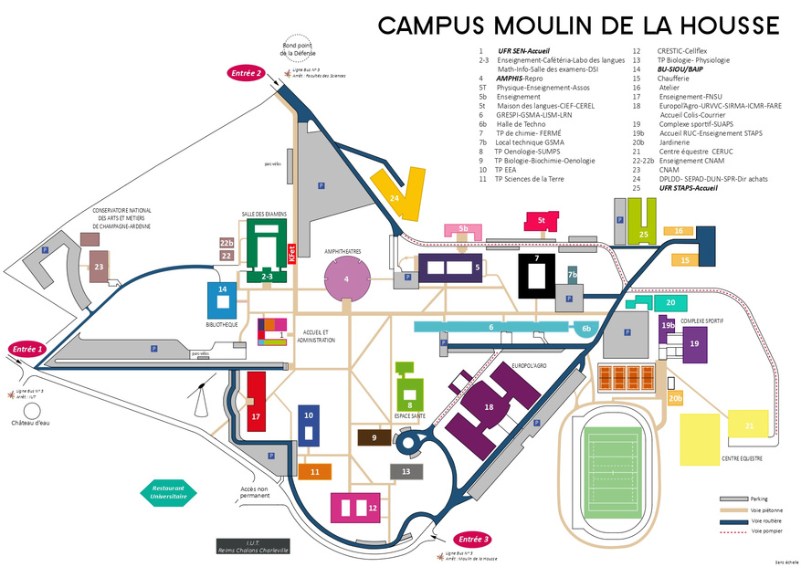

Le master
Le master SEP réunit des étudiants venus des mathématiques et de l'économie (APE). Il forme des statisticiens, data analysts et data scientists capables de dialoguer avec des non-spécialistes.
Débouchés
Data analyst, data scientist, data engineer, analytics engineer, chargé d'études statistiques, statisticien.
Il est aussi possible de poursuivre en recherche (doctorat).
Le mot des étudiants
S'installer à Reims
Le logement part vite : commencez vos recherches dès l'admission confirmée, idéalement avant l'été.
Trouver un logement
- Crous : Huit résidences dans la région, priorité aux boursiers. Demande via messervices.etudiant.gouv.fr et offres sur trouverunlogement.lescrous.fr.
- Résidences privées :
- MGEL Logement : Quai 207, Laudine, Les Bulles
- Les Estudines Drouet d'Erlon
- Le Foyer Rémois : foyer-remois.fr
- Lokaviz : portail de logements étudiants, sur lokaviz.fr
- Secteurs conseillés : centre-ville, Clairmarais, Jean-Jaurès, Cernay, Saint-Remi, Courlancy.
- Garant : si vous n'en avez pas, la garantie Visale est gratuite.
Aides financières
- Aide au logement (APL/ALS) : simulation et demande sur caf.fr, à faire dès la signature du bail.
- Bourse Crous : dossier social étudiant sur messervices.etudiant.gouv.fr.
- CVEC : à acquitter avant l'inscription sur cvec.etudiant.gouv.fr (exonération pour les boursiers).
- Mobili-Jeune : jusqu'à 100 €/mois d'aide au loyer pour les moins de 30 ans en alternance, sur mobilijeune.actionlogement.fr.
- Aide spécifique ponctuelle du CROUS : en cas de difficulté financière, prise de rendez-vous avec une assistante sociale sur messervices.etudiant.gouv.fr.
Se déplacer
- Réseau de bus et tram : Grand Reims Mobilités (tarifs étudiants disponibles).
- Titres, tarifs et lignes : voir la section Transports & Mobilité.
Santé et vie quotidienne
- Mettez à jour votre adresse auprès de l'Assurance maladie (ameli.fr) et déclarez un médecin traitant à Reims.
- Services du SSE : consultations médicales, infirmières, psychologues, gynécologie, diététique, vaccinations et certificats sportifs, sans avance de frais sur présentation de la carte étudiante.
- Campus Croix-Rouge : Bâtiment 20.
- Campus Moulin de la Housse : Bâtiment 8.
- Accueil du lundi au vendredi, 8h30–17h30 · Tél. 03 26 91 83 20.
- Nightline Reims : écoute étudiante gratuite et anonyme tous les soirs de 20h30 à 2h30 au 03 59 61 55 82 ou sur nightline.fr/reims.
- CHU Robert Debré : urgences hospitalières, terminus du Tram T1.
- Mission Handicap URCA : Contacts et prise de rendez-vous.
Transports & Mobilité
Le réseau de transport de Reims est Grand Reims Mobilités. Retrouvez les points de vente, les tarifs étudiants et les lignes desservant les deux campus.
Créer et recharger sa carte
Maison des Mobilités : guichet principal sur le parvis de la Gare de Reims Centre pour créer une carte Grand R ou souscrire un abonnement.
Pièces à fournir : pièce d'identité, photo d'identité récente, justificatif de domicile de moins de 3 mois, certificat de scolarité URCA et moyen de paiement.
Application KIF&GO : achat des titres et abonnements sur smartphone.
Rechargement : distributeurs automatiques aux arrêts de tramway, application KIF&GO.
Tarifs 18–25 ans
- MobiPass Illimité mensuel : 20 €/mois, voyages illimités pendant 30 jours sur les lignes bus et tram.
- MobiPass Illimité annuel : 200 €/an, mensualisation possible.
Tarifs officiels : grandreims-mobilites.fr.
Lignes de transport du Master SEP
| Trajet | Lignes | Arrêt |
|---|---|---|
| Vers Campus Croix-Rouge | Tram T1, Tram T2, Bus U5 | Campus Croix-Rouge |
| Vers Campus Moulin de la Housse | Bus O1, Bus U5 | Moulin de la Housse / IUT |
| Transition entre les deux campus | Tram T1 / T2 + Bus O1 | Correspondance au centre-ville |
| Trajets de nuit | TAD de Nuit sur MyMobi | Arrêts du réseau |
Vélo
- Zébullo : vélos électriques en libre-service dans Reims, avec tarif étudiant.
- Location longue durée : vélos classiques ou électriques au mois ou à l'année via Grand Reims Mobilités.
- Pistes cyclables : liaisons entre le centre-ville et les deux campus.
Trains et TGV
- Gare de Reims Centre : TGV vers Paris Gare de l'Est en 45 min et réseau TER Grand Est.
- Gare Champagne-Ardenne TGV : liaisons directes nationales et accès direct par le Tram T2 depuis Croix-Rouge.
Campus et vie étudiante
Les cours ont lieu sur les deux campus : campus Croix-Rouge, 57 rue Pierre Taittinger, 51100 Reims et campus Moulin de la Housse, Chem. des Rouliers, 51100 Reims.


Carte interactive
Filtrez par catégorie ou sélectionnez un point pour consulter les informations et l'itinéraire.
Étudier
- Bibliothèques universitaires (Horaires) :
- BU Robert de Sorbon, campus Croix-Rouge
- BU Moulin de la Housse, campus Moulin de la Housse
- BU Santé, 51 rue Cognacq-Jay
- BU Reims Éducation (INSPÉ)
- Impression et scan disponibles dans les BU, payables avec Izly
- Médiathèques de la ville (Horaires - Bibliothèques de Reims) :
- Médiathèque Jean Falala, 2 rue des Fuseliers
- Médiathèque Croix-Rouge, 19 rue Jean-Louis Debar
- Médiathèque Laon-Zola, 2 rue de la Neuvillette
- Bibliothèque Carnegie, 2 place Carnegie
- Bibliothèque Saint-Remi, 19 esplanade des Capucins
- Bibliothèque Chemin Vert, 12 avenue de l'Yser
- BU Robert de Sorbon, Croix-Rouge : Lun–Ven 8h–20h, Sam 9h–19h
- BU Moulin de la Housse : Lun–Ven 8h–20h
Salles de groupe : réservation sur BU Robert de Sorbon — Affluences et BU Moulin de la Housse — Affluences.
Médiathèques : inscription gratuite pour les étudiants.
Associations
Liste complète dans l'annuaire des associations étudiantes de l'URCA.
Restauration
Restauration universitaire sur les deux campus et solutions pour les courses.
Le repas complet est accessible à 1 € pour tous les étudiants dans les restaurants universitaires CROUS.
Compte Izly : à activer dès réception du mail à la rentrée sur izly.fr. Il permet le paiement avec l'application ou la carte étudiante URCA et sert aux impressions en BU.
Campus Croix-Rouge
Croix-RougeRU Jean-Charles Prost
- Self : 11h15 – 13h45
- Cafétéria : 7h00 – 16h00, samedi 8h30 – 14h00
- Pizzeria : service du midi
RU Paul Fort
Ouvert le soir- Midi : 11h30 – 13h45
- Soir : 18h45 – 20h00, du lundi au jeudi
Campus Moulin de la Housse
Moulin de la HousseRU Moulin de la Housse : 11h30 – 13h45
Cafétéria Moulin de la Housse : 11h30 – 14h00
Cafétéria des Sciences : 8h00 – 16h00
Cafétéria IUT : 7h00 – 15h45
Courses et marchés
- Marché du Boulingrin : centre-ville, mercredi, vendredi et samedi.
- Application anti-gaspillage : Too Good To Go.
- Grandes surfaces : zone commerciale de Cormontreuil et supermarchés à Croix-Rouge et au centre-ville.
Sport
Pratique sportive universitaire avec le SUAPS et salles de sport à proximité des campus.
SUAPS de l'URCA
Moulin de la Housse Tarif étudiantLieu : Gymnase universitaire de Moulin de la Housse et installations de la ville.
Activités : musculation, cardio, sports collectifs, escalade, natation, raquettes et cours de remise en forme.
Inscription : dès la rentrée sur univ-reims.fr/sport-suaps · Tél. 03 26 91 34 17.
Salles de sport
Campus Croix-Rouge
Croix-Rouge- Basic-Fit Pierre Taittinger : à proximité du campus, Lun–Ven 6h–22h30, Sam–Dim 9h–19h.
- GIGAFIT Reims Sud : 7j/7 de 6h à 23h.
Campus Moulin de la Housse
Moulin de la Housse- GYM K Reims Farman : musculation, cardio, cours collectifs et squash.
- Zone de Cormontreuil : ON AIR Fitness, Fitness Park et Basic-Fit.
Centre-ville
Centre-ville- Basic-Fit Rue de Vesle : sur l'axe du Tram T1/T2, Lun–Ven 6h–22h30, Sam–Dim 9h–19h.
- GYM K Reims Courcelles : secteur Gare / Clairmarais, Lun–Ven 6h–21h30.
- UCPA Sport Station Grand Reims : piscine, fitness, escalade, squash, padel et patinoire, tarifs étudiants.
Parc de Champagne : proche du campus Moulin de la Housse, espace vert en accès libre pour la course à pied et le sport en extérieur.
Vie à Reims et outils URCA
Lieux culturels et services numériques de l'université.
Culture et sorties
- Place Drouet d'Erlon : secteur piéton du centre-ville desservi par le Tram T1/T2.
- La Cartonnerie : salle de concerts avec tarifs étudiants sur cartonnerie.fr.
- Cinéma Opéraims : cinéma du centre-ville avec tarifs étudiants.
- Cathédrale Notre-Dame de Reims : accès libre.
- Musées municipaux : gratuité pour les étudiants de moins de 26 ans.
- SUAC : ateliers et billetterie culturelle universitaire sur univ-reims.fr/vie-des-campus/culture.
- Comédie et Opéra de Reims : tarifs réduits étudiants et éligibilité Pass Culture.
Outils numériques URCA
- ENT URCA : notes, attestations, messagerie et emploi du temps sur ebureau.univ-reims.fr.
- Moodle : supports de cours, jeux de données et dépôts de travaux.
- Wi-Fi
eduroam: réseau sans fil des deux campus accessible avec vos identifiants URCA. - Application URCA : consultation de l'emploi du temps et des salles sur Google Play et App Store.
- Microsoft 365 : suite Office accessible gratuitement avec l'adresse
@etudiant.univ-reims.fr.
Prérequis des cours
Logiciels à installer
Installez ces logiciels avant la rentrée. Les étapes dépendent de votre système (Windows, macOS ou Linux).
Pour les maths
GNU Octave
Logiciel libre de calcul numérique et de programmation scientifique.
- Windows, macOS, Linux : téléchargez l'installateur ou consultez les instructions sur octave.org/download.
- Sans installation : Octave Online, dans le navigateur.
Pour tout le monde
R
Langage de programmation pour la statistique et la data science.
- Windows : sur cran.r-project.org, choisissez « Download R for Windows » puis « base », et lancez l'installateur. Installez ensuite Rtools, dans la version correspondant à votre R.
- macOS : téléchargez le fichier
.pkgsur cran.r-project.org (version Apple Silicon ou Intel selon votre Mac) et suivez l'installateur. - Linux : installez R avec le gestionnaire de paquets, en suivant les instructions CRAN de votre distribution.
RStudio
Environnement de travail pour R (à installer après R). Gratuit, il gère aussi R Markdown et Quarto.
- Windows, macOS, Linux : téléchargez RStudio Desktop sur posit.co/download/rstudio-desktop.
Power BI
Outil de Microsoft pour créer des tableaux de bord et visualiser des données.
- Windows : téléchargez Power BI Desktop sur microsoft.com.
- macOS et Linux : Power BI Desktop n'existe pas. Utilisez la version en ligne, Power BI Service, qui a moins de fonctionnalités.
Excel
Tableur de Microsoft, utile pour manipuler rapidement des données et faire des tableaux croisés dynamiques.
- Windows et macOS : installez Microsoft 365 depuis office.com.
- Linux : utilisez la version en ligne sur office.com.
Git (Git Bash)
Outil de gestion de versions, utilisé pour les projets de groupe. En cours, on l'utilise avec Git Bash, un terminal pour taper les commandes Git. Installez R et RStudio avant Git.
- Windows :
- Installez d'abord l'éditeur de texte Notepad++.
- Téléchargez Git sur git-scm.com/downloads. Pendant l'installation, choisissez Notepad++ comme éditeur de texte associé à Git. Git Bash est installé avec Git.
- Dans RStudio, utilisez Git Bash comme terminal :
Tools>Global Options...>Terminal, puis choisissezGit Bashdans le champNew terminals open with.
- macOS et Linux : Git Bash n'est pas nécessaire, le Terminal (bash ou zsh) accepte les mêmes commandes.
Installez Git depuis git-scm.com/downloads,
puis choisissez nano comme éditeur :
git config --global core.editor "nano" - Configuration (tout le monde) : dans le terminal, tapez
git config --global user.name "Prénom Nom"git config --global user.email "mon.adresse@mail.com" - GitLab de l'URCA : les projets du master sont hébergés sur le serveur GitLab des départements de maths et d'informatique (gitlab-mi.univ-reims.fr). Connectez-vous une première fois avec vos identifiants de l'université (CAS).
Environnement Python (Anaconda / VS Code)
Python est le langage de base de la data science et du machine learning.
- Anaconda (Windows, macOS, Linux) : installe Python avec les principales bibliothèques (pandas, numpy, scikit-learn) et Jupyter. Téléchargement sur anaconda.com/download.
- VS Code (Windows, macOS, Linux) : éditeur de code, sur code.visualstudio.com. Ajoutez ensuite les extensions « Python » et « Jupyter ».
DBeaver
Logiciel pour se connecter à des bases de données et écrire des requêtes SQL.
- Windows, macOS, Linux : téléchargez la version gratuite (Community Edition) sur dbeaver.io/download.
Docker
Outil pour lancer des applications dans des « conteneurs », avec le même environnement sur toutes les machines.
- Windows : installez Docker Desktop. Il demande d'activer WSL 2, l'installateur vous guide.
- macOS : installez Docker Desktop (version Apple Silicon ou Intel).
- Linux : installez Docker Engine en suivant la documentation officielle.
Matériel
Un ordinateur portable
Indispensable pour suivre les cours et installer les logiciels.Pas d'ordinateur ?
Les BU prêtent des ordinateurs portables. Faites la demande dès la rentrée : le nombre d'ordinateurs est limité. Voir les conditions d'empruntCaméra et micro
Vérifiez qu'ils fonctionnent : certains cours ont lieu en ligne.Infos utiles
Stages et alternances
Préparer sa candidature
- Un CV à jour
- Un compte GitHub qui sert de portfolio : vous pouvez y mettre tous les projets réalisés pendant le master
Quand chercher ?
- Alternance : dès janvier du M1
- Stage : dès septembre du M2
Livret de stage
(lien).Pensez au réseau du master : contactez les anciens étudiants pour demander de l'aide ou des offres de stage et d'alternance.
Checklist d'arrivée
Cochez au fur et à mesure : vos cases restent enregistrées dans votre navigateur.
0 / 17 étapes validées · 0 %
Avant l'arrivée
Première semaine
Premier mois
Contacts utiles
Pour la formation
| Contact | Rôle | Coordonnées |
|---|---|---|
| Emmanuelle Gautherat | Responsable pédagogique du parcours SEP | emmanuelle.gautherat@univ-reims.fr |
| Jules Maes | Responsable pédagogique du parcours SEP | jules.maes@univ-reims.fr |
| Philippe Regnault | Responsable pédagogique du parcours SEP | philippe.regnault@univ-reims.fr |
| UFR Sciences Économiques, Sociales et de Gestion (SESG) | Secrétariat | Tél : 03 26 91 38 26 info.sesg@univ-reims.fr |
| UFR Sciences Exactes et Naturelles | Secrétariat | Tél : 03 26 91 34 19 scolarite.sciences@univ-reims.fr |
Autres
| Contact | Adresse | Coordonnées |
|---|---|---|
| Assurance Maladie (CPAM) | 4 rue du Ruisselet, 51086 Reims | Appel gratuit : 3646 |
| Caisse d'Allocations Familiales (CAF) | 202 rue des Capucins, 51086 Reims | Appel gratuit : 3230 |
| Action Logement | 2 place Paul Jamot, 51100 Reims | Appel : +33 3 53 13 00 59 actionlogement.fr/reims |
| Numéros d'urgence | 15 (Samu) · 17 (Police) · 18 (Pompiers) · 112 (Europe) | Liste des numéros d'urgence |
| Service de renseignement administratif | Appel gratuit : 3939 | |
| Maison des Mobilités | 28 A boulevard Joffre, 51100 Reims | grandreims-mobilites.fr |
| CROUS de Reims | 14 bis allée des Landais, 51100 Reims | crous-reims.fr |
| SSE — Santé Étudiante URCA | Croix-Rouge, Bât. 20 · Moulin de la Housse, Bât. 8 | Tél : 03 26 91 83 20 Lun–Ven 8h30–17h30 |
| Nightline Reims | Écoute étudiante gratuite et anonyme, 20h30 – 2h30 | Tél : 03 59 61 55 82 nightline.fr/reims |